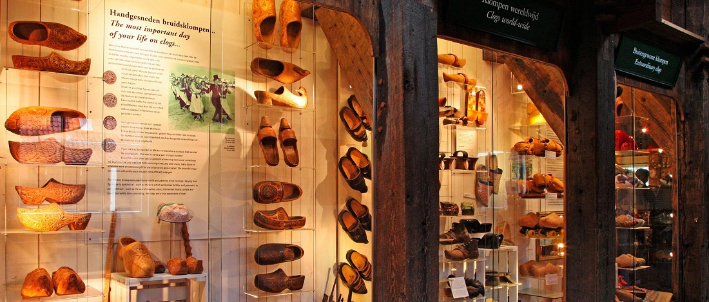

Bienvenue sur le site de Sabot D'Antan

Artisan sabotier de père en fils sur cinq générations
la famille Pujol vivant au cœur de l'Aveyron
vous transmet cette amour pour ce magnifique soulier tout fait de bois.